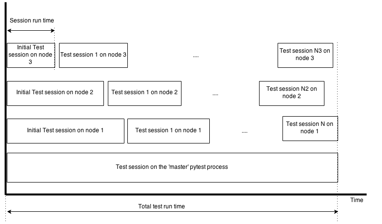

Introduction
In the earlier article on Test parallelization we unveiled how we parallelize our tests. There we gave a few examples of services we run for the tests. However, due to implementation details of pytest and pytest-xdist, it is not possible to implement service starting and stopping efficiently out of the box. That's why we developed our own solution, described in this article.
Back to the example, where the problem starts
import execnet
def app_worker(channel, database_connection, port):
"""Start web application.
:param channel: execnet channel to talk to the master process.
:param str database_connection: the database connection string.
:param port: the port number that will be used by runserver.
"""
# monkey patch the database connection
from config import database
database.database_connection = database_connection
import tornado.httpserver
import tornado.ioloop
import tornado.web
import tornado.wsgi
wsgi_app = tornado.wsgi.WSGIContainer(
app_wsgi_handler)
tornado_app = tornado.web.Application([
(r"/media/(.*)", tornado.web.StaticFileHandler, {"path": media_path}),
('.*', tornado.web.FallbackHandler, dict(fallback=wsgi_app)),
])
server = tornado.httpserver.HTTPServer(tornado_app)
server.listen(port)
channel.send('started app on port: {0}'.format(port))
tornado.ioloop.IOLoop.instance().start()
@pytest.fixture(scope='session')
def application(request, port, database_connection, timeout=10):
"""Start application in a separate process.
:param port: a random port the application should listen to.
"""
# create execnet gateway
gw = execnet.makegateway()
# set the same python system path on remote python as on current one
import sys
gw.remote_exec('\n'.join(
[
"import sys",
"sys.path = {0}".format(sys.path)
]
)).waitclose()
# create channel running worker function
channel = gw.remote_exec(
app_worker,
port=port,
database_connection=database_connection,
)
request.addfinalizer(gw.exit)
return gw
What is extremely important here is that we instantiate things like applications and services only once per test run, because it takes a lot of time to start / stop applications and/or services, to create databases, etc.
According to pytest fixtures, our application will be instantiated on demand and should live during the whole test session time. Which is fine, as long as you do not parallelize tests, and therefore do not use pytest-xdist.
But when you do use it, it's not guaranteed that test nodes will have only one test session!
pytest-xdist internals
To simplify things, let's concentrate on the stages that pytest-xdist uses to run tests in a distributed way:
Collect all nodes checking the connection
Rsync files needed
Collect all tests on every node
Start 'initial distribution' test sessions over nodes using the number of tests calculated by the following formula:
ntests = Ntests ⁄ (Knodes*4)- where:
- ntests - number of tests to run for test node session
- Ntests - total number of tests
- Knodes - number of test nodes
Start more test sessions for nodes which are done with initial test sessions using the same formula
We see here that the more tests you have for the same amount of nodes, the more test sessions will be started!
In the below diagram we can see how it works in a more visual way:
How to avoid multiple sessions on single node
So we know that it's possible to get not one but several sessions during the test run on a single node. How can we avoid that? Fortunately, even though we have multiple sessions per node, it's still the same python process, so we can cache objects on module level. In this way we invent a new fixture scope - test run. For fixtures within this scope, the fixture and its finalizer will be called only once per whole test run on a given test node. Here is the implementation of the utility decorator that we use:
import decorator
import pytest
marker = object()
def _memoize(func, *args, **kw):
"""Memoization helper to cache function's return value as an attribute of this function."""
cache = getattr(func, '_cache', marker)
if cache is marker:
func._cache = func(*args, **kw)
return func._cache
else:
return cache
def memoize(f):
"""Decorator which caches the return value of the function."""
return decorator.decorator(_memoize, f)
As you can see it's a pretty straightforward application of the memoization technique using function object as a cache storage based on the decorator package. The decorator package is needed to preserve the function prototype which is important for the pytest fixture dependency injection mechanism.
So now our application fixture looks like this:
import atexit
import execnet
@pytest.fixture(scope='session')
@memoize
def application(request, port, database_connection, timeout=10):
"""Start application in a separate process.
:param port: a random port the application should listen to.
"""
# create execnet gateway
gw = execnet.makegateway()
# set the same python system path on remote python as on current one
import sys
gw.remote_exec('\n'.join(
[
"import sys",
"sys.path = {0}".format(sys.path)
]
)).waitclose()
# create channel running worker function
channel = gw.remote_exec(
app_worker,
port=port,
database_connection=database_connection,
)
atexit.register(gw.exit)
return gw
By using the memoize decorator we avoid calling the application function multiple times during the test run, even if there will be multiple sessions involved on a single test node. The result of the first call of the application function will be cached as an attribute on the application function. Subsequent calls will just return the cached value. Note that instead of request.addfinalizer we use atexit.register. This is because memoization has it's downside - we cannot use pytest's normal fixture finalizers simply because there's no scope higher than session at the moment.
Conclusion
We identified a few advantages of using the approach discussed in the previous sections. This approach allowed us to considerably reduce our test execution time. It also improved the test stability, because the OS performs better as it doesn't need to spawn and kill lots of processes. We hope that you will find our approach useful, especially if you use pytest and pytest-xdist, as you will probably run into the same issues as we did.
Comments